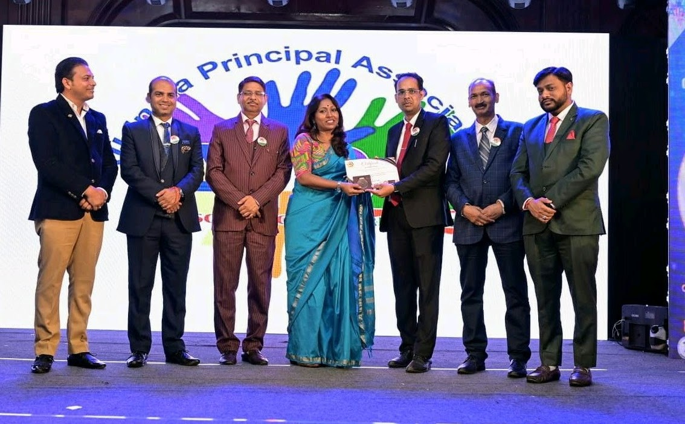
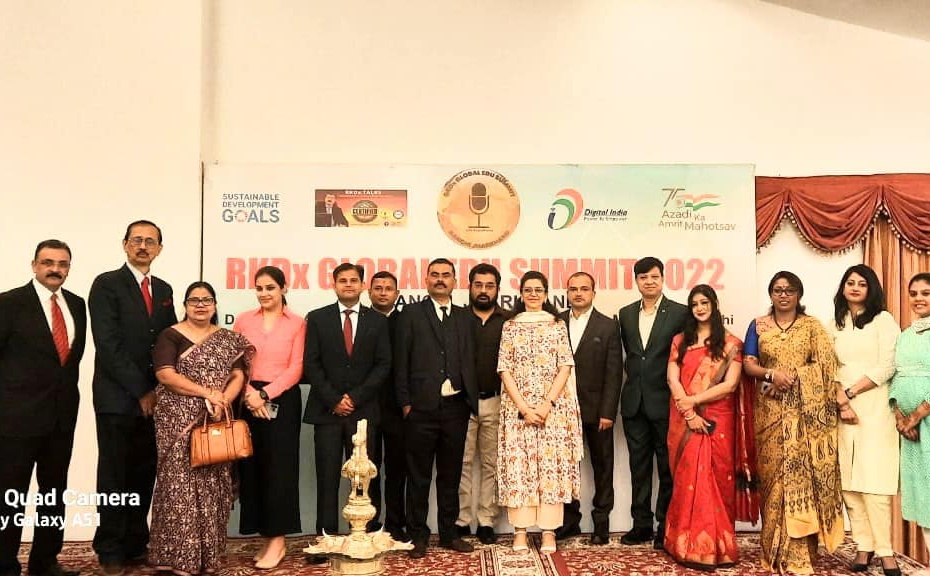

01Biology
See the
whole picture.
Build strong conceptual foundations with stories, visual maps, and the kind of questions that make complex chapters stay with you.
Explore supportBiology · NEET · what comes next
Manisha Dhar helps students turn biology from a subject to memorise into a world they can read — and a future they can choose with clarity.
See how I guidethe smallest
shift can change
the whole system.
Not just “What do I need to remember?” but “What is this living system trying to tell me?” Manisha’s classroom begins with curiosity, moves through structure, and ends with a student who trusts their own thinking.

Three ways forward
From the first diagram to the final counselling conversation, the work is personal, structured, and rooted in the student in front of me.
Build strong conceptual foundations with stories, visual maps, and the kind of questions that make complex chapters stay with you.
Explore supportFind a rhythm that respects your energy — focused revision, honest review, and a strategy that makes progress visible.
Explore supportAfter the result, step back from the noise. Compare options, understand pathways, and make a decision that feels informed — not rushed.
Explore supportLearn to recognise what you know, what needs work, and what kind of support will help you keep moving.
Explore supportThe map after the milestone
NEET results can make every decision feel urgent. Counselling creates a little space: to read the choices clearly, ask the questions that matter, and understand what each path asks of you.
These conversations are for students and families who want thoughtful guidance around options, timelines, and the next practical step.
Talk through your optionsCapturing the energy of the classroom and the clarity of guidance.

Not promises. Just the moments when a student starts to see the subject — or themselves — differently.
“I stopped treating every mistake like proof that I couldn’t do it. Now it tells me what to look at next.”
“The most useful part was having someone slow the decision down enough for us to understand it.”
“The chapter finally felt connected. I could explain it instead of just remembering the words.”
06 · begin here
Tell me where you are in the journey. A short note is enough to start a useful conversation.